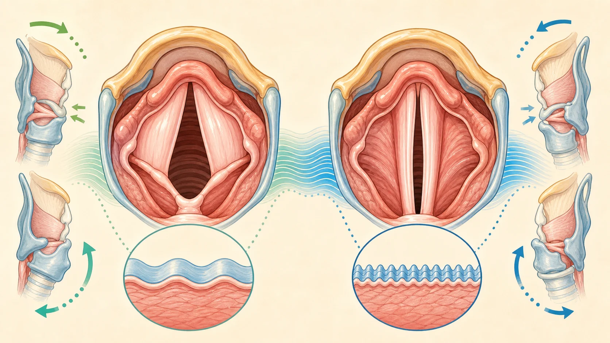
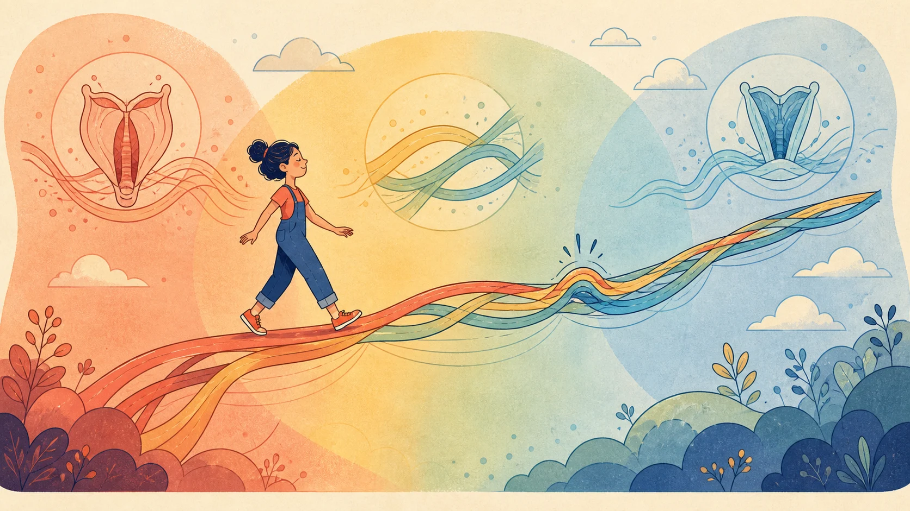
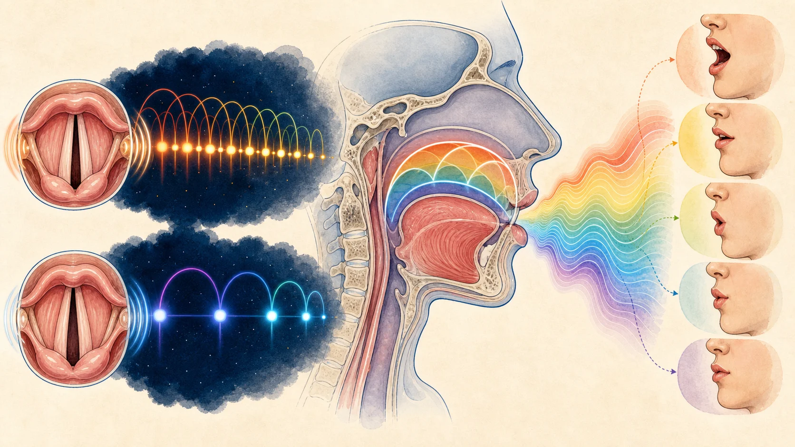
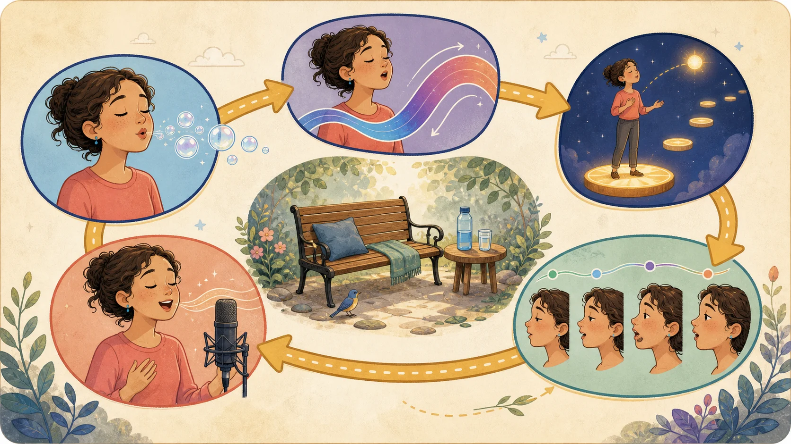
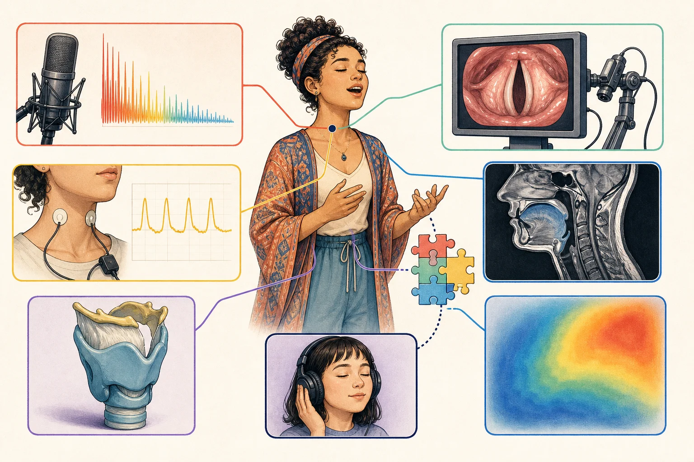

먼저 음정
성대가 초당 더 많이 진동해 기본주파수(F0)를 높입니다.
좋은 고음은 “가장 높은 소리”가 아니라
원하는 조건으로 다시 낼 수 있는 높은 소리예요.
성대가 초당 더 많이 진동해 기본주파수(F0)를 높입니다.
접촉, 공기, 공명과 모음을 목표 음량·음색에 맞춥니다.
가사와 프레이즈 속에서 반복하고도 목소리가 회복되어야 합니다.
01 · 먼저 질문을 정확하게
C5도 사람, 장르, 음량과 모음에 따라 편한 음·한계음·낮은 음이 될 수 있습니다.
| 흔한 말 | 실제 묻는 것 | 확인할 것 |
|---|---|---|
| 높은 음을 냈다 | 성대의 F0가 목표에 닿았는가? | 음정과 지속시간 |
| 음역이 넓어졌다 | 한 번의 끝음인가, 반복 가능한 범위인가? | 최저·최고 F0와 음량 지도 |
| 고음이 편해졌다 | 노력감이 줄었나, 음질이 바뀌었나? | 모음·음량·길이·자가평가 |
| 두성으로 넘어갔다 | 진동 기전, 접촉, 음색 중 무엇이 바뀌었나? | EGG·영상·음향·청취 |
| 믹스가 열렸다 | 전환이 연결됐나, 밝기나 음압이 달라졌나? | 교육 용어와 측정 변수를 분리 |
02 · 엔진은 어떻게 빨라질까
살아 있는 여러 층의 조직을 복수의 근육과 연골이 함께 조절합니다.

CT 작용과 연골 운동은 성대를 늘이는 데 크게 관여합니다.
조직이 변형에 버티는 성질이 F0에 중요한 영향을 줍니다.
한 주기에 크게 참여하는 조직의 양과 분포가 달라질 수 있습니다.
얼마나 붙고 열리는지, 압력과 흐름이 얼마인지가 음질·음량을 바꿉니다.
CT = 고음 버튼?
TA = 저음 버튼?
아니요. 서로 영향을 주는 조절망입니다.
CT는 성대 신장에 중요하고 TA는 성대 몸통의 길이·단면·강성·접촉에 관여합니다. 모델과 작은 근전도 연구는 TA의 효과가 다른 조건에 따라 달라질 수 있음을 보여 줍니다. 근육 비율을 감각만으로 재거나 하나의 정답 숫자로 처방할 수 없습니다.
49명 여성 전문 성악가 CT 연구에서는 첫 옥타브 이후 피열연골의 추가 운동도 관찰됐습니다. 한 관절의 단순 회전보다 복합적인 협응이라는 단서입니다.
03 · 성구와 파사지오
가슴·머리·가성·믹스는 교육 체계마다 뜻이 다르고, 음높이와 진동 기전도 완전히 같은 축이 아닙니다.

| 이름 | 보통 가리키는 것 | 오해하지 말 것 |
|---|---|---|
| 가슴성 | 낮고 단단하며 말소리 같은 음질 | 소리가 가슴에서 생성되는 것은 아님 |
| 두성 | 상부의 가볍거나 둥근 훈련 음질 | 모든 체계에서 M2와 같은 뜻은 아님 |
| 가성 | 접촉이 적고 기식적인 상부 음질인 경우가 많음 | 모든 M2가 약하거나 기식적인 것은 아님 |
| 믹스 | 가슴·머리 사이를 잇는 음질과 전략 묶음 | 측정된 50:50 근육 혼합물이 아님 |
| 파사지오 | 기전·접촉·공명·음색 조율이 두드러지는 구간 | 모두에게 같은 음명으로 고정되지 않음 |
평균적으로 접촉이 크고 풍부한 음원 스펙트럼을 보이는 경향이 있지만 높은 구간까지 확장될 수 있습니다.
같은 음을 M1과 M2 양쪽에서 낼 수 있는 사람이 있습니다. 음량과 음색은 같지 않을 수 있습니다.
유효 진동 질량과 접촉이 줄어드는 경향이 있지만 훈련에 따라 강하고 연결된 음질도 가능합니다.
04 · 고음에서 모음이 변하는 이유
성대가 음원을 만들고, 성도는 그 안의 일부 배음을 골라 키웁니다.

배음 간격이 좁아 한 공명 근처에 여러 배음이 놓일 수 있습니다.
배음 간격이 넓어 작은 음정·성도 변화가 출력 음량과 음색을 크게 바꿀 수 있습니다.
모음 단서가 줄고 모음들이 서로 비슷해질 수 있으며 포먼트 측정도 어려워집니다.
05 · 같은 음, 다른 성공 조건
마이크, 반주, 가사, 미학과 필요한 음압이 다르면 성대와 성도 전략도 달라질 수 있습니다.
상부에서 R1:F0 조율, 입 열림과 모음 수렴이 자주 관찰됩니다. 마이크 없이 투사하는 목표가 큽니다.
F0뿐 아니라 2F0·3F0 등과의 공명 관계, 커버·모음·voix mixte 전략이 논의됩니다.
말하듯 밝고 직접적인 큰 음질이 흔합니다. “가슴성으로 끝까지 밀기”가 과학적 정의는 아닙니다.
마이크 덕분에 낮은 음압, 기식성, 얇은 질감도 공연 가능한 선택이 됩니다.
06 · 어제 되던 음이 왜 안 될까
고음은 여러 하위 시스템의 여유분에 민감합니다.
“C5가 안 됐다”보다
“큰 /a/로 아래에서 2초 접근할 때만 끊겼다”
가 다음 연습을 훨씬 잘 알려 줍니다.
07 · 최고음 한 점보다 지도
Voice range profile(VRP)은 여러 음높이에서 가능한 최소·최대 음압을 그려 줍니다.
어느 구간에서 작은 소리와 큰 소리가 가능한지, 훈련 전후 전체 지도가 어떻게 달라졌는지를 봅니다. 장비·거리·방·워밍업이 같아야 비교가 쉬워집니다.
가사, 장르 음질, 프레이즈 연결, 공연 전체의 피로와 다음 날 회복은 별도로 확인해야 합니다.
어떤 음질로든 잠깐 소리가 난다.
여러 번 비슷하게 낼 수 있다.
모음·음색·음량·길이를 유지한다.
곡 전체의 문맥과 피로 속에서도 안정적이다.
08 · 안전한 탐색
통증이나 지속적인 쉰 목소리가 없는 건강한 상태를 전제로 한 일반적인 탐색 틀입니다.

편한 모음 또는 립트릴·허밍·빨대 발성으로 작은 음량의 짧은 글라이드를 찾습니다.
오래 버티기 전에 짧고 반복 가능한 접촉을 만듭니다. 위에서 내려오는 접근도 비교합니다.
길이, 모음, 음량, 가사 중 하나씩 실제 곡 조건으로 옮깁니다.
앞뒤 음과 가사 속에서 연결합니다. 독립된 최고음보다 음악적 최고음을 확인합니다.
연습 직후 말소리와 다음 날 음역이 평소 같은지까지 기록합니다.
립트릴·허밍·빨대 발성은 입구 임피던스를 바꾸어 부드러운 시작, 글라이드와 노력감 탐색에 유용할 수 있습니다. 25명 연구에서 3분 립트릴 직후 VRP 범위가 소폭 늘었습니다.
즉시 변화는 장기 음역 확장이 아닙니다. 카르나틱 성악가 12명의 연구에서는 물 빨대가 한 시간 부하 지표를 충분히 줄이지 못했습니다. “빨대=고음 공식”으로 만들지 마세요.
09 · 건강과 중단 기준
위험은 음량·충돌·진동 횟수·사용 시간·회복·질병과 개인 요인이 함께 만드는 누적 부하에 가깝습니다.
10 · 합의와 빈칸
과학적인 설명은 자신감의 크기가 아니라 근거의 범위를 보여 줍니다.
신장과 유효 질량은 중요하지만 강성·접촉·공기·공명이 함께 작동합니다.
두 근육 모두 여러 발성에 참여하며 상호작용은 비선형적입니다.
압력은 필요하지만 더 큰 압력이 더 정밀한 F0나 더 좋은 효율을 보장하지 않습니다.
측정 단위 없는 교육 은유입니다. 기전·접촉·공명과 지각을 따로 봐야 합니다.
전문 가수에게서도 여러 전환 양상이 관찰됩니다. 조율할 정보이지 인격 평가가 아닙니다.
통증은 적응의 필수 증거가 아닙니다. 부하를 낮추고 상태를 볼 이유입니다.
11 · 논문을 읽는 눈
참가자·과제·측정 도구·시간 범위를 확인해야 결과를 내 발성에 과장 적용하지 않습니다.

| 도구 | 잘 보는 것 | 혼자서는 모르는 것 |
|---|---|---|
| 마이크·스펙트럼 | F0, 배음, 음압, 소음·기울기 | 근육 활성과 정확한 3D 모양 |
| EGG | 성대 접촉 변화의 간접 지표 | 실제 충돌력과 개별 근육 |
| 후두 영상 | 위에서 본 성문 개폐·진동 | 조직 내부 응력과 전체 성도 공명 |
| MRI·CT | 성도와 연골의 모양·위치 | 자연 공연 전체와 모든 근육 힘 |
| 근전도 | 특정 근육의 전기 활성 | 소리 전체의 원인·효율·안전성 |
| VRP | F0–SPL 가능 범위 | 장르 음질·가사·공연 지속성 |
| 청자 평가 | 사람에게 실제로 어떻게 들리는가 | 그 음질을 만든 유일한 해부 원인 |
전문 오페라 소프라노, 비훈련자, 단 한 명은 서로 다른 모집단입니다.
한 모음의 짧은 스케일과 실제 공연 프레이즈는 서로 다른 과제입니다.
3분 뒤 즉시 효과와 수개월 뒤 장기 적응은 같은 결론이 아닙니다.
12 · 더 깊게 읽기
아래 링크는 주장의 적용 범위를 직접 확인하기 위한 출발점입니다. 전체 참고문헌과 자세한 해설은 과학 문서에 있습니다.
성대의 F0, 접촉과 공기, 성도의 공명, 모음, 음량, 장르와 회복을 따로 관찰하고 다시 한 팀으로 묶으세요. 한 번의 최고음보다 반복 가능한 음악적 고음이 더 좋은 목표입니다.